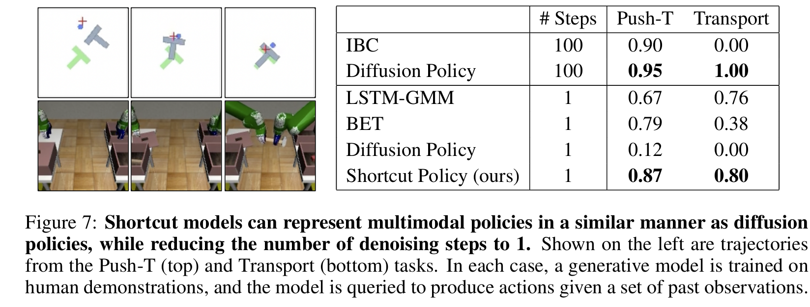
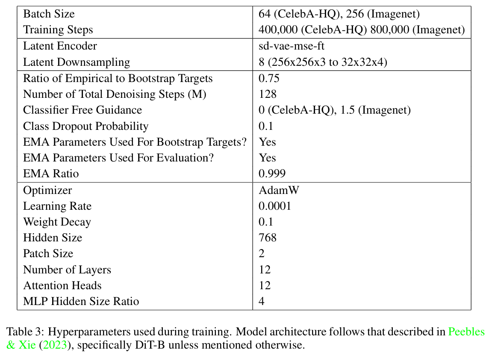

全文翻译
摘要
扩散模型和流匹配模型通过学习将噪声转化为数据，能够生成多样且逼真的图像。然而，从这些模型中采样需要经过神经网络多次迭代去噪，这使得生成过程缓慢且成本高昂。以往加速采样的方法需要复杂的训练机制，如多阶段训练、使用多个网络或采用不稳定的调度策略。我们引入了快捷模型（shortcut models），这是一类生成模型，它使用单个网络和单一训练阶段，在单次或多次采样步骤中生成高质量样本。快捷模型不仅根据当前噪声水平对网络进行条件设定，还依据期望的步长进行调整，使模型能够在生成过程中实现快速推进。在各种采样步长预算下，快捷模型始终能比一致性模型（consistency models）和重流模型（reflow）等先前方法生成更高质量的样本。与蒸馏方法相比，快捷模型将复杂度降低到单个网络和单一训练阶段，并且在推理时允许灵活改变步长预算。
1 引言
诸如扩散模型（Sohl-Dickstein等人，2015；Ho等人，2020；Song等人，2020）和流匹配模型（Lipman等人，2022；Liu等人，2022 ）这类迭代去噪方法，在对各种图像（Rombach等人，2022；Esser等人，2024）、视频（Ho等人，2022；BarTal等人，2024）、音频（Kong等人，2020）和蛋白质（Abramson等人，2024）进行建模方面取得了显著成功。然而，它们的缺点在于推理成本较高。尽管这些方法能生成高质量的样本，但需要迭代推理过程，通常需要神经网络进行数十到数百次前向传递，这使得生成过程缓慢且成本高昂。我们认为，存在一种生成建模目标，它既能保留扩散训练的优势，又能在一步内完成去噪。
 |
|---|
| 图1：不同推理预算下，流匹配模型和快捷模型的生成结果。快捷模型在广泛的推理预算范围内都能生成高质量图像，包括仅使用一次前向传递，与扩散模型和流匹配模型相比，采样时间最多可大幅缩短128倍。相比之下，扩散模型和流匹配模型在少步设置下，生成质量会迅速下降。每列中使用相同的初始噪声，两个模型均在CelebA-HQ和Imagenet-256（类别条件）上进行训练。 |
我们考虑端到端的设置，即通过单个模型在单次训练中实现一步去噪。与之密切相关的是先前的两阶段方法，这些方法先利用现有的扩散模型，随后将一步生成能力提炼到模型中。这些阶段增加了复杂性，并且需要生成大型合成数据集（Luhman和Luhman，2021；Liu等人，2022），或者在一系列教师网络和学生网络中进行传播（Ho等人，2020；Meng等人，2023）。一致性模型（Song等人，2023）更接近端到端的设置，但它们对大量自训练（bootstrapping）的依赖，要求在整个训练过程中进行仔细的学习调度。两阶段或严格调度的过程存在何时结束训练并开始蒸馏的指定问题。相比之下，端到端的方法可以无限期地训练，以持续改进。
我们提出快捷模型，这是一类端到端的生成模型，能够在任何推理预算下，包括在单次采样步骤中，生成高质量的样本。我们的核心见解是，让神经网络不仅根据噪声水平，还根据期望的步长进行条件设定，使其能够在去噪过程中准确地向前跳跃。快捷模型可以看作是在训练期间进行自我蒸馏，因此不需要单独的蒸馏步骤，并且可以在单次运行中完成训练。无需进行调度或仔细的预热。快捷模型的训练效率很高，与基础扩散模型相比，仅需多约16% 的计算量。
实证评估表明，快捷模型满足许多有用的需求。在常用的CelebA-HQ和Imagenet-256基准测试中，单个快捷模型可以处理多步、少步和一步生成。准确性并未受到牺牲，实际上，多步生成的质量与基线扩散模型相当。同时，快捷模型在少步和一步设置中，始终能够与两阶段蒸馏方法相媲美，甚至超越它们。
本文的主要贡献总结如下：
- 我们引入了快捷模型，这是一类生成模型，通过根据期望步长对模型进行条件设定，在单次前向传递中生成高质量样本。与蒸馏模型或一致性模型不同，快捷模型在单次训练运行中进行训练，无需调度。
- 我们在固定架构和计算量的情况下，对快捷模型与先前的扩散模型和流匹配模型方法，在CelebAHQ-256和ImageNet-256上进行了全面比较。快捷模型达到或超过了需要多个训练阶段的蒸馏方法，并且在推理预算范围内，显著优于先前的端到端方法。
- 为了证明快捷模型在图像生成之外的通用性，我们将其应用于机器人控制领域，用快捷策略取代扩散策略。我们观察到，快捷模型在推理成本降低一个数量级的情况下，仍能保持相当的性能。
- 我们发布了模型检查点和完整的训练代码，以复现我们的实验结果：https://github.com/kvfrans/shortcut-models
2 背景
- 扩散和流匹配：最近出现的一类模型，包括扩散模型（Sohl-Dickstein等人，2015；Ho等人，2020；Song等人，2020 ）和流匹配模型（Lipman等人，2022；Liu等人，2022 ），它们通过学习一个将噪声转化为数据的常微分方程（ODE）来解决生成建模问题。在本文中，为简化起见，我们采用最优传输流匹配目标（Liu等人，2022 ）。我们将$x_{t}$定义为数据点$x_{1} \sim D$和相同维度的噪声点$x_{0} \sim N(0, \mathbb{I})$之间的线性插值。速度$v_{t}$是从噪声点指向数据点的方向：给定$x_{0}$和$x_{1}$，速度$v_{t}$就完全确定了。但仅给定$x_{t}$时，会存在多对合理的$(x_{0}, x_{1})$组合，因此速度可能有不同取值，这使得$v_{t}$成为一个随机变量。流模型通过学习一个神经网络来估计期望值$\bar{v}_{t}=\mathbb{E}[v_{t} | x_{t}]$，该期望值是对$x_{t}$处所有合理速度的平均。流模型可以通过对随机采样的噪声$x_{0}$和数据$x_{1}$对的经验速度进行回归来优化：为了从流模型中采样，首先从正态分布中采样一个噪声点$x_{0}$。然后，根据学习到的流模型$\bar{v}_{\theta}(x_{t}, t)$定义的去噪ODE，将该点从$x_{0}$迭代更新到$x_{1}$。在实践中，这个过程通过在小的离散时间间隔上使用欧拉采样进行近似。
- 少步模糊性：虽然一个训练完美的ODE在连续时间内可以确定性地将噪声分布映射到数据分布，但在有限步长下，这种保证就会丧失。如图2所示，流匹配模型学习预测从$x_{t}$指向数据的平均方向，因此使用大步长进行预测会跳到多个数据点的平均值处。在$t = 0$时，模型接收纯噪声作为输入，并且在训练期间$(x_{0}, x_{1})$是随机配对的，所以在$t = 0$时预测的速度指向数据集的均值。因此，即使在流匹配目标的最优情况下，对于任何多模态数据分布，一步生成都会失败。
| 图2：简单的扩散模型和流匹配模型在少步生成时会失败。左图：训练路径是通过随机配对数据和噪声创建的。注意路径是重叠的；仅给定$x_{t}$时，指向数据点的方向$v_{t}$存在固有不确定性。虽然流匹配模型学习了一个确定性的ODE，但其路径不是直的，必须紧密跟随。预测的方向$v_{t}$指向合理数据点的平均值。推理步骤越少，生成结果就越偏向数据集均值，从而导致偏离轨道。在第一次采样步骤中，模型指向数据集均值，因此无法在一步内生成多模态数据（见红色圆圈）。 |
3 用于少步生成的快捷模型
我们引入快捷模型，这是一类全新的去噪生成模型，克服了扩散模型和流匹配模型所需的大量采样步骤的问题。我们的核心思路是，不仅依据时间步$t$，还依据期望步长$d$对模型进行条件设定，训练出一个支持不同采样预算的单一模型。
如图2所示，流匹配模型学习的ODE会沿着弯曲路径将噪声映射到数据。简单地采用大步长采样会导致较大的离散化误差，在单步采样的情况下，甚至会导致灾难性的失败。通过依据$d$进行条件设定，快捷模型能够考虑未来路径的曲率，从而跳到正确的下一个点，而不是偏离轨道。我们将从$x_{t}$指向正确的下一个点$x_{t+d}’$的归一化方向称为快捷方向$s(x_{t}, t, d)$：
我们的目标是训练一个快捷模型$s_{\theta}(x_{t}, t, d)$，以学习所有$x_{t}$、$t$和$d$组合的快捷方向。因此，快捷模型可以看作是流匹配模型向更大步长的扩展：流匹配模型仅学习瞬时速度，而快捷模型还额外学习进行更大的跳跃。当$d \to 0$时，快捷方向等同于流。
一种简单的计算训练$s_{\theta}(x_{t}, t, d)$目标的方法是，以足够小的步长对ODE进行正向模拟（Luhman & Luhman, 2021; Liu et al., 2022）。然而，这种方法计算成本高昂，尤其对于端到端训练来说。相反，我们利用快捷模型固有的自一致性属性，即一个快捷步等同于两个连续的、步长减半的快捷步：
这使得我们能够在$d>0$时使用自一致性目标训练快捷模型，并在$d = 0$时使用流匹配损失（公式2）作为基本情况。原则上，我们可以在任何$d \sim p(d)$的分布上训练模型。在实践中，我们将批次分为两部分，一部分使用$d = 0$进行训练，另一部分使用随机采样的$d>0$目标进行训练。由此，我们得到了组合的快捷模型损失函数：
直观地说，上述目标学习了一种从噪声到数据的映射，这种映射在任何步长序列下查询时都是一致的，包括直接在单步中查询。目标中的流匹配部分使快捷模型在小步长时能够与经验速度样本相匹配，从而为快捷模型奠定基础生成能力，就像等效的流匹配模型在多步查询时一样。在自一致性部分，通过连接两个较小快捷步的序列来构建较大步长的合适目标，将生成能力从多步传播到少步再到单步。这个组合目标可以通过单个模型在单个端到端训练过程中联合训练。
3.1 训练细节
我们现在介绍一个通过上述目标训练快捷模型的简单框架。在每个阶段，我们做出有助于训练稳定性和简便性的设计决策。
- 回归经验样本：当$d \to 0$时，快捷方向等同于瞬时流。因此，我们可以使用公式2给出的损失，在$d = 0$时训练快捷模型，即通过随机采样$(x_{0}, x_{1})$对，并拟合$v_{t}$的期望值。这一项可以看作是使小步长快捷方向与数据去噪ODE相匹配的基础。我们发现均匀采样$t \sim U(0,1)$是最简单的方法，并且与其他采样方案效果相当。
- 强制自一致性：鉴于快捷模型在小步长时是准确的，我们的下一个目标是确保快捷模型在大步长时也能保持这种性能。为此，我们依赖于模型自身生成的自训练目标。为了限制累积的近似误差，最好限制自训练路径的总长度。因此，我们选择一种二元递归公式，即使用两个快捷步来构建一个步长加倍的快捷步（图3）。
| 图3：快捷模型训练概述。当$d≈0$时，快捷模型的目标等同于流匹配目标，可以通过对经验$E[v_{t} \mid x_{t}]$样本进行回归来训练。对于更大步长$d$的快捷模型，其目标是通过连接两个步长为$d/2$的快捷步来构建的。这两个目标可以联合训练；快捷模型不需要两阶段训练过程或离散化调度。 |
我们必须确定一个步数M，以表示近似ODE的最小时间单位；在我们的实验中使用128。根据$d \in(1 / 128, 1 / 64 … 1 / 2,1)$，这会产生$log _{2}(128)+1=8$种可能的快捷步长。在每次训练步骤中，我们采样$x_{t}$、t和一个随机的$d<1$，然后使用快捷模型进行两个连续的步骤。这两个步骤的连接结果随后被用作训练模型在$2d$步长时的目标。
需要注意的是，第二步是在去噪ODE下基于$x_{t+d}’$进行查询的，而不是基于经验数据配对，即它是通过将预测的第一个快捷步加到$x_{t}$上构建的，而不是从数据集中的$x_{1}$进行插值得到的。当d取最小值（例如1/128）时，我们改为在$d = 0$时查询模型。
- 联合优化：公式5由经验流匹配目标和自一致性目标组成，在训练过程中进行联合优化。经验项的方差要高得多，因为它是对具有固有不确定性的随机噪声配对进行回归，而自一致性项使用确定性的自训练目标。我们发现构建一个经验目标数量明显多于自一致性目标数量的批次会很有帮助。
上述做法也为我们提高计算效率提供了空间。训练所需的自一致性目标比经验目标少，而且生成自一致性目标的成本也更高（需要额外进行两次前向传递）。因此，我们可以通过将比例为$1-k$的经验目标与k个自一致性目标组合来构建训练批次。我们发现$k=(1 / 4)$是比较合理的。通过这种方式，我们可以将快捷模型的训练成本降低到仅比等效扩散模型高约16%。 - 引导：无分类器引导（CFG; Ho & Salimans, 2022）已被证明是扩散模型实现高生成保真度的重要工具。CFG提供了一种在类别条件和无条件去噪ODE之间进行权衡的线性近似。我们发现CFG在小步长时很有帮助，但在大步长时，由于线性近似不合适，容易产生误差。因此，我们在评估快捷模型且$d = 0$时使用CFG，在其他情况下则不使用。快捷模型中CFG的一个局限性是，CFG尺度必须在训练前指定。
- 指数移动平均权重：最近的许多扩散模型都对权重参数使用指数移动平均（EMA）来提高样本质量。EMA对生成结果有平滑作用，这在扩散建模中特别有用，因为目标本身存在方差。我们发现在快捷模型中也是如此，$d = 0$时损失的方差可能会导致$d = 1$时输出出现大幅振荡。利用EMA参数生成自一致性目标可以缓解这个问题。
- 权重衰减：我们发现权重衰减对于确保训练稳定性至关重要，尤其是在训练早期。当快捷模型接近初始化时，它生成的自一致性目标大多是噪声。模型可能会锁定这些不一致的目标，导致出现伪影和不良的特征学习。我们发现适当的权重衰减可以消除这些问题，使我们无需离散化调度或仔细的预热过程。
- 离散时间采样：在实践中，我们可以通过仅在相关时间步上进行训练来减轻快捷网络的负担。在训练过程中，我们首先采样d，然后仅在快捷模型将被查询的离散时间点（即d的倍数）上采样t。我们仅在这些时间步上训练自一致性目标。
4 相关工作
- 扩散模型的蒸馏：此前有多项研究探索了将预训练的扩散模型蒸馏为一步或几步模型的方法（Luo, 2023）。知识蒸馏（Luhman & Luhman, 2021）和校正流（Liu et al., 2022）通过完全模拟去噪ODE来生成合成数据集。由于完全模拟的成本较高，人们提出了许多利用自训练来热启动ODE模拟的方法（Gu et al., 2023; Xie et al., 2024）。此外，也有人提出用对抗（Sauer et al., 2023）或分布匹配（Yin et al., 2024b;a）目标等替代L2距离作为蒸馏目标。我们的工作与使用二元时间蒸馏（Salimans & Ho, 2022; Meng et al., 2023; Berthelot et al., 2023）的技术最为相关，该技术将蒸馏过程划分为$log _{2}(T)$个阶段，逐步增大步长，从而缩短所需的自训练路径。与这些先前的工作不同，我们专注于端到端地学习一步生成模型，无需单独的预训练和蒸馏阶段。我们的方法在计算成本上低于完全模拟的方法（如校正流、知识蒸馏），并且避免了渐进蒸馏方法中多个教师-学生阶段。
- 一致性建模：一致性模型（Song et al., 2023）是一类一步生成模型，旨在学习从任何部分含噪的数据点映射到最终数据点。虽然这类模型可用作蒸馏的学生模型（Luo et al., 2023; Geng et al., 2024），但也有人提出通过一致性训练从头开始端到端地训练一致性模型（Song et al., 2023; Song & Dhariwal, 2023）。我们的工作解决的是相同的问题，但采用了不同的方法——一致性训练在经验$x_{t}$和$x_{t+d}$样本之间强制一致性，由于存在模糊性，这种方法在每个离散化步骤都会累积不可约的偏差。我们则是从学习到的ODE中采样$x_{t+d}’$，从而避免了这个问题。快捷模型仅需要$log _{2}(T)$次自训练，而一致性模型则需要T次。快捷模型自然支持多步生成作为非自训练的基本情况，而一致性模型在所有情况下都需要自训练。此外，快捷模型在实践中更简单，因为许多一致性模型的技巧（如使用严格的离散化调度、使用感知损失而非L2损失）在快捷模型中可以完全省略。
5 实验
我们开展了一系列实验，对快捷模型的质量、可扩展性和稳健性进行评估。在质量方面，快捷模型展现出与先前两阶段方法相媲美的少步和单步生成能力，并且优于其他端到端方法。同时，快捷模型在多步生成时能保持基础扩散模型的性能。我们的实验表明，随着模型规模的增加，快捷模型的生成能力持续提升。快捷模型学习到了可插值的潜在噪声空间，并且在诸如机器人控制等应用中表现稳健。
5.1 快捷模型与先前的一步生成方法相比表现如何？
在本节中，我们使用相同的模型架构和代码库，从无到有地训练每个目标函数，以此对我们的方法与多种先前方法进行细致比较。我们采用DiT-B扩散变换器架构（Peebles & Xie, 2023），选择CelebAHQ-256进行无条件生成任务，选择Imagenet-256进行类别条件生成任务。在所有实验中，我们使用AdamW优化器（Loshchilov, 2017），学习率恒定为$1\times10^{-4}$ ，权重衰减设置为0.1。所有实验均使用sd-vae-ft-mse自动编码器（Rombach et al., 2022）的潜在空间。
- 与先前工作的比较：我们将对比两类基于扩散的先前方法：一类是两阶段方法，先预训练一个扩散模型，再单独进行蒸馏；另一类是端到端方法，通过单次训练从无到有地训练一个一步模型。
- Diffusion (DiT-B)代表标准的扩散模型，严格遵循（Peebles & Xie, 2023）中的设置。
- Flow Matching使用最优传输目标替换扩散目标（Liu et al., 2022）。它与扩散模型一起，为迭代多步去噪模型的性能提供了基线。其余方法均以标准流匹配模型为基础（若适用，将其作为教师模型）。
- Reflow代表一种标准的两阶段蒸馏方法，通过全面评估教师模型来生成合成的$(x_{0}, x_{1})$对。我们遵循Liu等人（2022）的方法，为CelebAHQ生成50,000个合成示例，为Imagenet生成1,000,000个合成示例。每个示例的生成需要128次前向传递。Reflow与知识蒸馏（Luhman & Luhman, 2021）类似，不同之处在于学生模型在所有$t\in(0,1)$上进行训练，而非仅在$t = 0$时训练。
- Progressive Distillation代表一种两阶段二元时间蒸馏方法，与我们提出的方法具有相似性。遵循Salimans和Ho（2022）的方法，从预训练的教师模型出发，逐步蒸馏出一系列学生模型，每个学生模型的步长是前一个的2倍。为与我们的方法保持一致，在第一阶段蒸馏（将128步模型蒸馏为64步模型）时使用无分类器引导。
- Consistency Distillation代表一种基于一致性模型的两阶段蒸馏策略。通过教师扩散模型生成$(x_{t}, x_{t+d})$对，然后训练一个单独的学生一致性模型，以确保在这些对中对$x_{1}$的预测保持一致。
- Consistency Training代表一种先前的端到端方法，与我们的设置最为接近，它从无到有地训练一个一步模型。一致性模型基于从数据集中采样的经验$(x_{t}, x_{t+d})$样本进行训练。按照Song等人（2023）的方法，在训练过程中逐渐增加时间离散化区间。
- Live Reflow是我们提出的另一种端到端方法，在该方法中，模型同时基于流匹配和Reflow蒸馏得到的目标进行训练。模型分别以不同的目标类型作为条件。蒸馏目标在每个训练步骤中通过完全去噪自生成，因此该方法的计算成本相当高。我们将其纳入比较范围以供参考。
这些工作涵盖了先前两阶段蒸馏和端到端训练方法的主要类型。为确保比较的严谨性，我们在同一代码库上运行所有先前工作的对比实验，并且使用不少于我们方法的总计算量。
- 评估：我们使用标准的弗雷歇初始距离（Frechet Inception Distance，FID）指标，对采用128步、4步和1步扩散生成的样本进行模型评估。我们报告FID-50k指标，这是先前研究中的标准做法。按照标准流程，FID的计算基于整个数据集的统计信息，生成的图像不进行压缩，并且使用双线性上采样将图像大小调整为299x299，并将像素值裁剪到(-1, 1)范围内。在评估过程中，我们使用指数移动平均（EMA）模型参数。
表1突出展示了快捷模型在少步和单步采样情况下保持精确生成的能力。除两阶段渐进蒸馏方法外，快捷模型的性能优于所有先前方法，且无需多个训练阶段。需要注意的是，渐进蒸馏模型失去了多步采样的能力，而快捷模型保留了这一能力。不出所料，扩散模型和流匹配模型在4步和1步生成任务中表现不佳。有趣的是，在我们的实验中，快捷模型的FID略优于可比的流匹配模型。一种未经证实的假设是，自一致性损失起到了对模型的隐式正则化作用，不过我们将这一探究留作未来的研究方向。附录A中提供了更多可视化示例。
| 表1：在等效架构（DiT-B）和计算量下不同训练目标的比较。表中展示了128步、4步和1步去噪的FID-50k分数（分数越低越好）。快捷模型在单次训练中，无论推理预算如何，都能生成高质量样本。与扩散模型和流匹配模型相比，快捷模型大幅减少了所需的采样步骤。与蒸馏方法相比，快捷模型简化了训练流程，并在训练后可灵活选择推理预算。括号内表示在目标原本不支持的条件下进行的评估。 |
5.2 快捷模型在不同推理预算下的表现如何？
我们现在分析快捷模型在生成图像时，随着步数变化的表现。简单的流匹配模型通过切线速度来近似去噪ODE，而快捷模型则经过训练，近似对去噪ODE进行积分，在低步数情况下表现更为精确。图4表明，虽然更多的步数通常会有所帮助，但简单的流匹配模型在低步数时的性能下降，比快捷模型明显得多。在我们的实验中发现，快捷模型在多步生成时的性能并未受到牺牲，即使在高步数情况下，它也能保持与基线流模型相当的性能。
流模型在少步生成时产生的伪影类似于模糊和模态崩溃（图1左图）。快捷模型通常不会出现这些问题，并且从相同的初始噪声生成的图像，在整体上与多步生成的等效图像相匹配。快捷模型中的伪影主要体现在高精度细节方面的错误。因此，单步快捷模型生成的图像可作为一种参考：如果下游用户希望优化单步生成的图像，他们可以使用相同的初始噪声重新生成图像，只需增加生成步数即可。
| 图4：流匹配模型和快捷模型在去噪步数减少时的表现。简单的流匹配模型会出现性能下降和模态崩溃的问题，而快捷模型在少步和单步生成时仍能够保持相似的样本分布。在大推理预算下，这种能力并不会牺牲生成质量。定性示例见图1。 |
5.3 快捷模型的性能如何随模型规模提升？
深度学习中的一个显著趋势是，大规模的过参数化模型在规模扩大时，能力也会增强。然而，这一趋势在基于自训练的方法中并不明显，例如在强化学习中学习Q函数（Kumar et al., 2020; Sokar et al., 2023; Obando-Ceron et al., 2024）。这类方法常见的问题类似于一种秩崩溃现象：通过在自生成的输出上重新训练，模型的表达能力可能会受到限制。由于快捷模型本质上也是基于自训练的，我们探究它是否能从模型规模的扩大中受益。如图5所示，即使在单步设置下，我们基于Transformer的快捷模型架构，也能随着模型规模的增加，实现越来越精确的生成。这些结果表明，尽管快捷模型依赖自训练，但它能够避免严重的性能崩溃，并且随着模型参数数量的增加，性能持续提升。在Imagenet-256数据集上，使用DiT-XL规模训练的快捷模型，单步FID能够达到10.6，128步FID能够达到3.8，附录中的表2展示了具体数据。
| 图5：随着模型参数数量的增加，一步生成的质量持续提升。虽然生成模型通常会随着模型规模的扩大而不断改进，但像Q学习这样基于自训练的方法已被证明会丧失这一特性（Kumar等人，2020）。我们的研究表明，快捷模型虽然也是基于自训练的方法，却保留了随着模型规模提升生成精度的能力。 |
5.4 快捷模型能为我们提供可插值的潜在空间吗？
| 图6：两个采样噪声点之间的插值结果。图中展示的所有图像均由模型生成。每一行图像均是对两个高斯噪声样本进行方差保持插值后，再经单步去噪生成的。 |
快捷模型表示从噪声到数据的确定性映射。为了探究这种映射的结构，我们可以在初始噪声样本之间进行插值，并观察相应生成的图像。图6展示了通过这种方式生成的插值示例。首先采样一对噪声点$(x_{0}^{0}, x_{0}^{1})$，然后以方差保持的方式进行插值：
尽管在噪声到数据的映射过程中没有进行显式的正则化，但得到的插值生成图像呈现出定性上的平滑过渡。中间的图像在语义上似乎是合理的。需要注意的是，在可视化的生成图像中，所有图像均由模型生成。虽然我们没有探索在现有图像之间进行插值，但可以像Ho等人（2020）所做的那样，向现有图像中添加噪声，并对这些中间点进行插值。
5.5 快捷模型在非图像领域是否有效？
本文中描述的生成建模目标与具体领域无关，但传统的常见基准测试通常涉及图像生成。我们现在通过在机器人控制任务中训练快捷模型策略，来评估快捷模型公式的通用性。
具体而言，我们基于Chi等人（2023）提出的方法进行构建。这种扩散策略框架训练一个以观测为条件的模型，以迭代方式预测机器人动作。原研究使用100个去噪步骤，而我们旨在通过训练快捷模型将推理步骤减少到一步。除了将AdamW权重衰减从0.001调整为0.1，并添加步长d的条件项外，我们使用与原研究相同的网络结构和超参数。此外，我们使用流匹配目标，而非epsilon预测目标。
图7展示了从Chi等人（2023）的研究中选取的机器人控制任务——Push-T和Transport，在这些任务中，基线方法表现不佳。我们将快捷模型策略与迭代去噪方法IBC（Florence et al., 2022）和扩散策略（Chi et al., 2023），以及一步方法LSTM-GMM（Mandlekar et al., 2021）和BET（Shafiullah et al., 2022）进行比较。结果表明，快捷模型策略在机器人控制任务中能够取得优异的性能，同时将推理成本限制为单次函数调用。相比之下，一步扩散策略则遭遇灾难性失败。
|  |
|---|
| 图7：快捷模型能够以与扩散策略类似的方式表示多模态策略，同时将去噪步骤减少到1步。左侧展示的是Push-T任务（上图）和Transport任务（下图）的轨迹。在每种情况下，一个生成模型通过人类演示进行训练，然后根据一组过去的观测数据查询该模型以生成动作。 |
6 讨论
本文介绍了快捷模型，这是一种新型的基于扩散的生成模型，支持少步和一步生成。快捷模型背后的关键思想是学习一个以步长为条件的模型，该模型在小步长时与数据相关联，并在大步长时通过自训练进行训练。
快捷模型提供了一种简单的方法，无需调度，可在单次运行中端到端地进行训练。与先前的蒸馏方法不同，快捷模型不需要单独的预训练和蒸馏阶段。与一致性训练相比，快捷模型不需要训练调度，仅使用标准的L2回归，并且所需的自训练步骤更少。
在CelebA-HQ和Imagenet-256上的实证评估表明，快捷模型优于先前的单阶段方法，并且与两阶段蒸馏方法具有竞争力。尽管依赖自训练，但快捷模型训练稳定，并且随着模型参数规模的增加而表现更好。我们展示了快捷模型如何应用于非图像领域，如机器人控制。
- 最佳实践：对于希望使用快捷模型的从业者，我们建议牢记以下几点。应遵循标准的扩散模型实践，例如将数据集归一化到单位方差。如果自一致性损失表现出不稳定的行为，可以减少训练批次中自一致性目标的比例。强烈建议使用非零的权重衰减。使用指数移动平均（EMA）参数进行评估通常会带来性能提升，但并非严格必要。
- 实现方式：我们提供了快捷模型的开源代码实现，以及模型检查点，可在以下网址获取：https://github.com/kvfrans/shortcut-models
- 局限性：虽然快捷模型为训练一步生成模型提供了一个简单的框架，但一个关键的固有局限性是，噪声和数据之间的映射完全依赖于数据集上的期望。在其他类型的生成模型（例如生成对抗网络（GANs）（Goodfellow等人，2020）、变分自编码器（VAEs）（Kingma，2013））中，可以调整这种映射，这有可能简化学习问题。其次，在我们的快捷模型实现中，多步生成质量和一步生成质量之间仍然存在差距。
- 未来工作：快捷模型开辟了一系列未来的研究方向。在表1中，快捷模型的多步生成表现略优于基础流模型，那么是否有一种方法可以通过一步生成来提升多步生成的质量（而不是通常的相反情况）？对快捷模型公式进行扩展是可能的，例如通过类似重流（Reflow）的过程（Liu等人，2022）迭代地调整噪声到数据的映射，或者缩小多步和一步生成之间的差距。这项工作为开发理想的生成建模目标奠定了基础，即一种简单的方法，能够同时满足快速采样、模态覆盖和高质量生成这三个要求。
7 致谢
本研究部分得到了美国国家科学基金会为KF提供的奖学金支持，资助编号为DGE 2146752。本材料中表达的任何观点、发现、结论或建议均为作者个人观点，不一定反映美国国家科学基金会的意见。PA同时担任加州大学伯克利分校教授和亚马逊学者。本文描述的是在加州大学伯克利分校开展的工作，与亚马逊无关。感谢谷歌TPU研究云（TRC）为我们提供TPU资源用于研究。
A 附录
| 图8：从无条件的CelebA-HQ数据集中生成的256x256分辨率图像示例。每组三张图代表从相同噪声生成的图像，从上到下分别是经过128步、4步和1步去噪的结果。这些结果由DiT-B规模的模型训练40万次迭代生成。 |
| 图9：从类别条件的Imagenet数据集中生成的256x256分辨率图像示例。每组三张图代表从相同噪声生成的图像，从上到下分别是经过128步、4步和1步去噪的结果。这些结果由DiT-XL规模的模型训练80万次迭代生成。训练过程（生成过程中不使用）中使用了1.5的无分类器引导（CFG）。 |
| 表2：与Imagenet-256上的最先进生成模型的比较。由于计算资源的限制，我们无法使用与之前报告的最佳生成模型相同的计算资源来训练模型。然而，结果表明快捷模型能够随着模型规模的增加而提升生成质量。使用DiT-XL架构的快捷模型（XL）达到的FID比表1中的DiT-B架构低得多，并且与之前的最先进模型具有竞争力。请注意，所比较的模型使用不同的架构和计算预算。此外，由于卷积层和注意力层中的权重共享，参数数量与训练计算量并非完全成正比。水平短划线表示未报告的数量。 |
B 训练细节
|  |
|---|
| 表3：训练过程中使用的超参数。除非另有说明，模型架构遵循Peebles & Xie (2023)中描述的DiT-B架构。 |
B.1 计算
所有实验均在TPUv3节点上运行，并且使用JAX框架实现相关方法。虽然不同方法的运行时间有所差异，但每次训练通常需要1 - 2天完成。
B.2 方法细节
以下是对对比方法背后细节的描述。所有方法均在同一代码库中实现，并使用相同的架构。选择训练预算时，确保对比实验使用大致相同的计算量（如果某种方法为产生合理结果需要更多计算量，则提供更多计算资源）。
- 流匹配：我们使用标准的线性插值来生成速度目标。对基础模型进行80万次迭代训练，并使用确定性欧拉采样对图像进行去噪。训练40万次迭代时的模型检查点用作两阶段蒸馏方法的教师模型。
- 重流（Reflow）：我们使用基础流匹配模型来创建重流中使用的合成目标。对于CelebA-HQ数据集，生成50,000个目标；对于Imagenet数据集，生成1,000,000个目标。然后在合成数据集上再进行40万次迭代的蒸馏过程。在适用的情况下，使用无分类器引导（CFG）生成合成数据，而在最终蒸馏得到的模型中不使用CFG。
- 渐进蒸馏：我们按照标准的蒸馏时长（40万次迭代）进行渐进蒸馏，并将其平均分配到每个蒸馏阶段。由于共有8个不同阶段，每个阶段包含5万次训练步骤。在每个阶段，使用教师模型采样两个连续的自训练步骤，学生模型被训练来模仿这些步骤。在一个训练阶段结束时，学生模型将成为新的教师模型。仅在第一阶段（将128步模型蒸馏为64步模型）使用无分类器引导。
- 一致性蒸馏：我们在速度空间中训练一个一致性模型，以匹配流匹配的基本框架。因此在每次迭代中，需要在两点$(x_{t}, x_{t+d})$之间强制实现速度预测的一致性。这两个点是通过在教师流模型的方向上，从$x_{t}$迈出一个小步长$d = (1 / 128)$得到的。通过查询一致性模型从$x_{t+d}$计算目标速度，使用该预测估计$x_{1}$，然后将目标速度计算为$(x_{1} - x_{t}) / (1 - t)$。
- 一致性训练：以与上述相同的格式训练一致性模型。与从教师模型采样$(x_{t}, x_{t+d})$不同，这里的样本对是通过在不同强度下对噪声和经验数据样本进行插值得到的。遵循Song等人（2023）的方法，使用离散化调度。我们采用与渐进蒸馏中类似的二元时间调度，具体来说，第一阶段有一个离散化区间，然后是两个，接着是四个，以此类推。
- 实时重流（Live Reflow）：在这种方法中，我们将重流转换为可以在单次训练中运行的过程。与快捷模型类似，我们训练一个以$d$为条件的模型。批次中的一部分样本用于在$d = 0$时训练模型，使其朝着流匹配损失优化，我们使用与快捷模型相同的比例0.75。批次的另一部分由通过对一组随机噪声进行完全去噪自生成的自训练目标组成。由于这是一个计算成本相当高的过程，我们将目标生成的去噪步骤限制为8步。即便如此，实时重流的计算量仍是其他方法的4倍多。
文章总结
这篇论文发表于2025-ICLR-Oral，提出了一个叫快捷模型的生成模型，它的突破思想是将步长也当成条件输入到扩散模型中，并配以一个直观的正则项，这样可以使用单个网络和单一训练阶段，在单次或多次采样步骤中生成高质量样本。
创新点与主要思想
ODE扩散
原论文的结论是基于ODE式扩散模型的，而对于ODE式扩散的理论基础，我们在本系列的（六）、（十二）、（十四）、（十五）、（十七）等博客中已经多次介绍，其中最简单的一种理解方式大概是（十七）中的ReFlow视角，下面我们简单重复一下。
假设$x_0 \sim p_0(x_0)$是先验分布采样的随机噪声，$x_1 \sim p_1(x_1)$是目标分布采样的真实样本（注：前面的文章中，普通都是$x_T$是噪声、$x_0$是目标样本，这里方便起见反过来了），ReFlow允许我们指定任意从$x_0$到$x_1$的运动轨迹，最简单的轨迹自然是直线：
两边求导，就可以得到它满足的ODE（常微分方程）：
这个ODE很简单，但实际上没用，因为我们想要的是通过ODE由$x_0$生成$x_1$，而上述ODE却显式地依赖$x_1$。为了解决这个问题，一个很简单的想法是“学一个$x_t$的函数去逼近$x_1 - x_0$”，学完之后就用它来取代$x_1 - x_0$，即
以及
这就是ReFlow。当然这里还欠缺了一个理论证明，就是通过平方误差来拟合$v_\theta(x_t, t)$所得到的ODE确实能生成我们期望的分布，这部分大家自行看《生成扩散模型漫谈（十七）：构建ODE的一般步骤（下）》就好。
步长自治
假设我们已经有了$v_\theta(x_t, t)$，那么通过求解微分方程$\frac{dx_t}{dt} = v_\theta(x_t, t)$就可以实现从$x_0$到$x_1$的变换。划重点，是“微分方程”，但实际上我们没法真的去数值计算微分方程，而是只能算“差分方程”：
这个差分方程是原始ODE的“欧拉近似”，近似程度取决于步长$\epsilon$的大小，当$\epsilon \to 0$时就精确等于原始ODE，换言之步长越小越精确。然而，生成步数等于$1 / \epsilon$，我们希望生成步数越少越好，这意味着不能用太大的步长，最好$\epsilon$可以等于1，这样$x_1 = x_0 + v_\theta(x_0, 0)$，一步就可以完成生成。
问题是，如果直接用大步长代入上式，最终所算得的$x_1$必然会严重偏离精确解。这时候原论文（下称“Shortcut模型”）的巧妙构思就登场了：它认为模型$v_\theta(x_t, t)$不应该只是$x_t$和$t$的函数，还应该是步长$\epsilon$的函数，这样差分方程(5)就可以自行适应步长：
目标(3)训练的是精确的ODE模型，所以它训练的是$\epsilon = 0$的模型：
那$\epsilon > 0$的部分又怎么训练呢？我们的目标是生成步数越少越好，这等价于说希望“两倍的步长走1步等于单倍的步长走2步”：
即$v_\theta(x_t, t, 2\epsilon) = [v_\theta(x_t, t, \epsilon) + v_\theta(\tilde{x}_{t + \epsilon}, t + \epsilon, \epsilon)] / 2$。为了达到这个目标，我们补充一项自洽性损失函数
$\mathcal{L}_1$与$\mathcal{L}_2$相加，就构成了Shortcut模型的损失函数。
（注：有读者指出，更早的《Consistency Trajectory Models: Learning Probability Flow ODE Trajectory of Diffusion》提出过以离散化时间的起点和终点作为条件输入的做法，指定起点和终点后步长其实也就确定了，所以Shortcut以步长为输入的做法并不算完全创新。）
模型细节
以上基本就是Shortcut模型的全部理论内容，非常精巧且简明，但从理论到实验，还需要一些细节，比如步长$\epsilon$如何融入到模型中去。
首先，在训练$\mathcal{L}_2$时，Shortcut并没有均匀地从$[0, 1]$采样$\epsilon$，而是设置了一个最小步长$2^{-7}$，然后将它们倍增至1，即所有的非零步长只有$\{2^{-7}, 2^{-6}, 2^{-5}, 2^{-4}, 2^{-3}, 2^{-2}, 2^{-1}, 1\}$这8个值，从前7个中均匀采样来训练$\mathcal{L}_2$。这样一来，$\epsilon$的取值就是有限的，算上0一共就只有9个，所以Shortcut模型直接以Embedding的方式来输入$\epsilon$，将它跟$t$的Embedding加在一起。
其次，注意到$\mathcal{L}_2$的计算量是比$\mathcal{L}_1$大的，因为$v_\theta(\tilde{x}_{t + \epsilon}, t, \epsilon)$这一项需要两次前向传播，所以论文的做法是每个batch中$3/4$的样本都用来计算$\mathcal{L}_1$，剩下的$1/4$样本才用来算$\mathcal{L}_2$。该操作不仅是为了节省计算量，实际上还调节了$\mathcal{L}_1, \mathcal{L}_2$的权重，因为$\mathcal{L}_2$比$\mathcal{L}_1$更好训练，所以它的训练样本可以适当少些。
除此之外，论文在实践的时候还对$\mathcal{L}_2$做了微调，多加了个stop gradient算子：
为什么要这样做呢？按照作者的回复，这是自引导学习的常见做法，被stop gradient的部分属于目标，不应该有梯度，跟BYOL、SimSiam等无监督学习方案类似。不过照笔者看来，这个操作最大的价值还是节省训练成本，因为$v_\theta(\tilde{x}_{t + \epsilon}, t, \epsilon)$这一项做了两次前向传播，如果要对它反向传播，计算量也要翻倍。
实验效果
现在我们来看Shortcut模型的实验效果，看起来它是目前单步生成效果最好的、单阶段训练的扩散模型：
| 表1：在等效架构（DiT-B）和计算量下不同训练目标的比较。表中展示了128步、4步和1步去噪的FID-50k分数（分数越低越好）。快捷模型在单次训练中，无论推理预算如何，都能生成高质量样本。与扩散模型和流匹配模型相比，快捷模型大幅减少了所需的采样步骤。与蒸馏方法相比，快捷模型简化了训练流程，并在训练后可灵活选择推理预算。括号内表示在目标原本不支持的条件下进行的评估。 |
这是它的实际采样效果图：
|
|---|
| 图1：不同推理预算下，流匹配模型和快捷模型的生成结果。快捷模型在广泛的推理预算范围内都能生成高质量图像，包括仅使用一次前向传递，与扩散模型和流匹配模型相比，采样时间最多可大幅缩短128倍。相比之下，扩散模型和流匹配模型在少步设置下，生成质量会迅速下降。每列中使用相同的初始噪声，两个模型均在CelebA-HQ和Imagenet-256（类别条件）上进行训练。 |
不过仔细观察单步生成的样本就会发现，其实还有明显的瑕疵，所以说虽然Shortcut模型相比于之前的单阶段训练方案来说已经取得了较大的进步，但还有明显的提升空间。
延伸思考
看到Shortcut模型，不知道大家想到了哪些相关工作？笔者想到了一个可能大家都想不到的，那就是我们在《生成扩散模型漫谈（二十一）：中值定理加速ODE采样》介绍过的AMED。
Shortcut模型与AMED的底层思想是相通的，它们都已经发现，单靠研究复杂的高阶求解器，将生成的NFE（模型的运行次数）降低到个位数就已经很简单了，更不用说做单步生成了。所以它们一致认为，真正要变的并不是求解器，而是模型。该怎么变呢？AMED想到的是“中值定理”：对ODE两端积分，我们有精确的
类比“积分中值定理”，我们能找到一个$s \in [t, t + \epsilon]$，成立
于是我们得到
当然，积分中值定理实际上只对标量函数成立，对向量函数是不保证成立的，所以说是“类比”。现在的问题是并不知道$s$的值，所以AMED的后续做法是用一个非常小的（计算量几乎可以忽略的）模型去预测$s$。
AMED是基于现成扩散模型的事后修正方法，因此它的效果取决于中值定理对$v_\theta(x_t, t)$模型的成立程度，这显得有些“运气成分”，并且AMED需要先用欧拉格式预估一下$x_s$，所以它的NFE最少是2，不能做到单步生成。相比之下，Shortcut模型更“激进”，它直接把步长作为条件输入，将加速生成的条件(8)作为损失函数，这样一来不仅避免了“中值定理”近似的可行性讨论，还使得最少NFE可以降低到1。
更巧妙的是，细思之下我们会发现两者的做法其实也有些共性，前面我们说了Shortcut是直接将$\epsilon$转成Embedding加到$t$的Embedding上的，这不相当于跟AMED一样都是修改$t$嘛！只不过AMED是直接修改$t$的数值，而Shortcut修改的是$t$的Embedding。